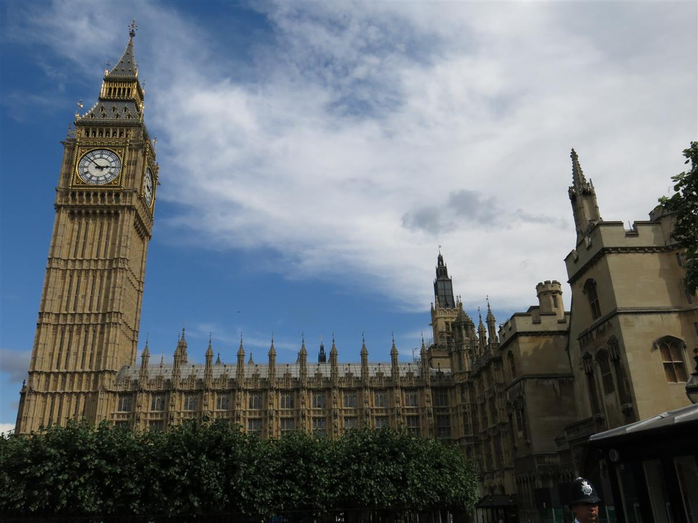
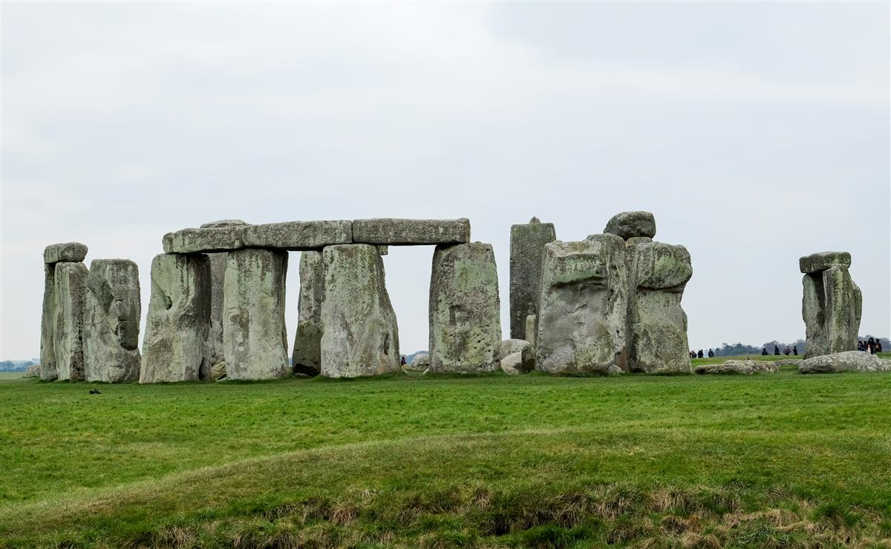
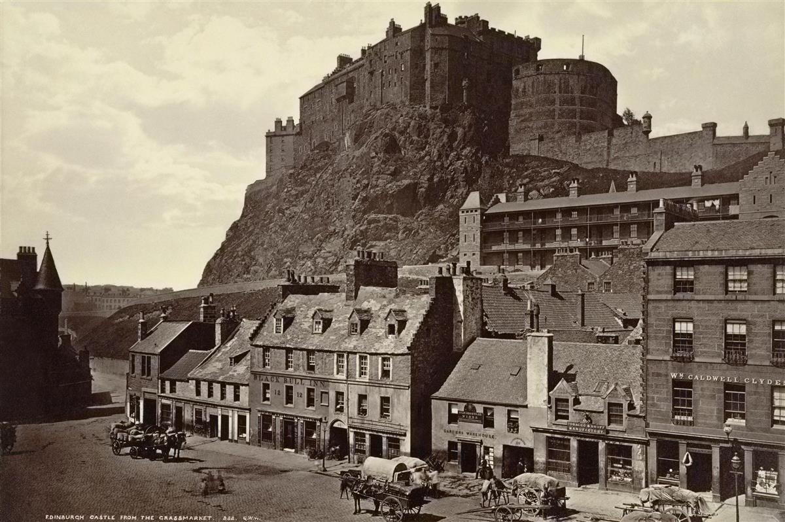
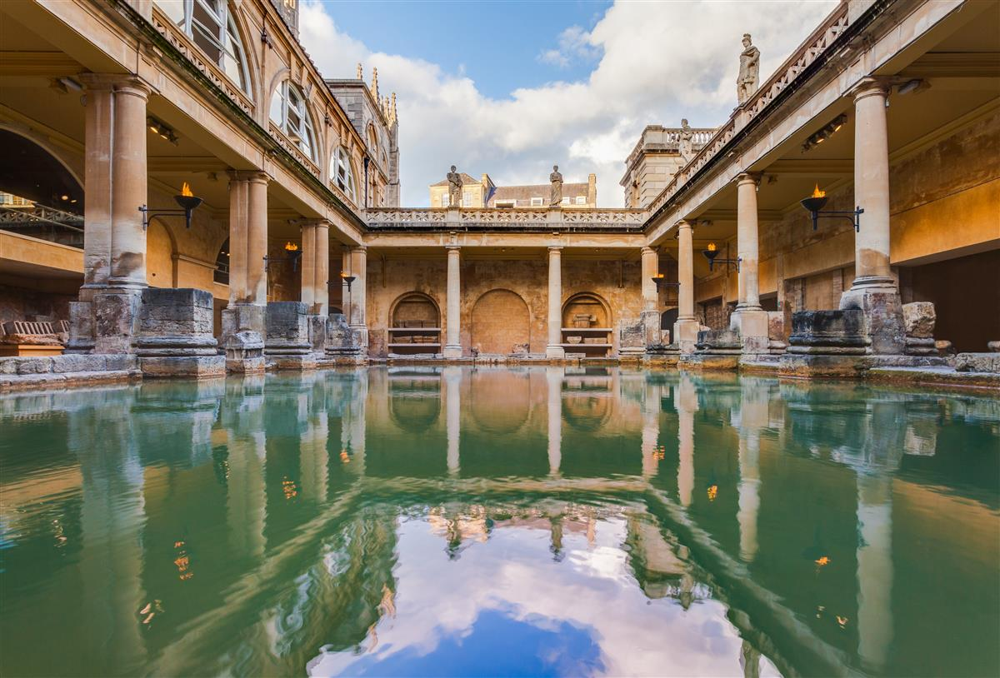
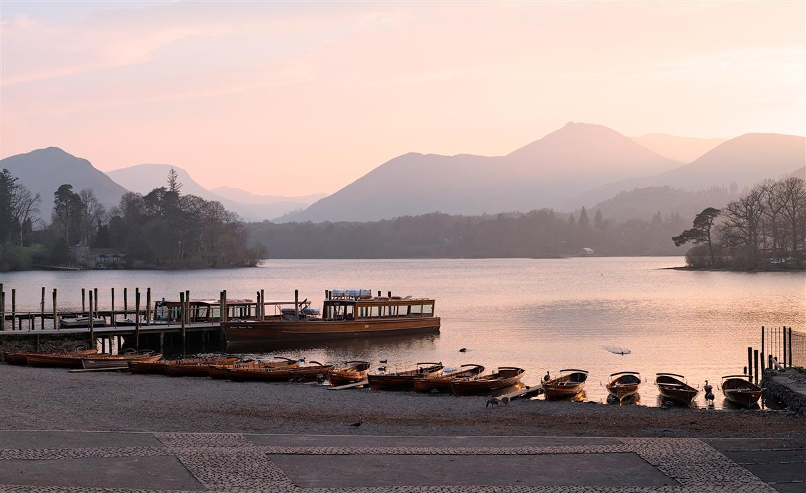
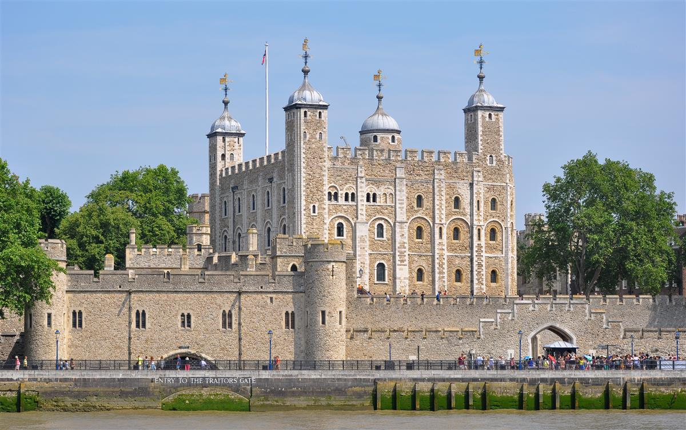
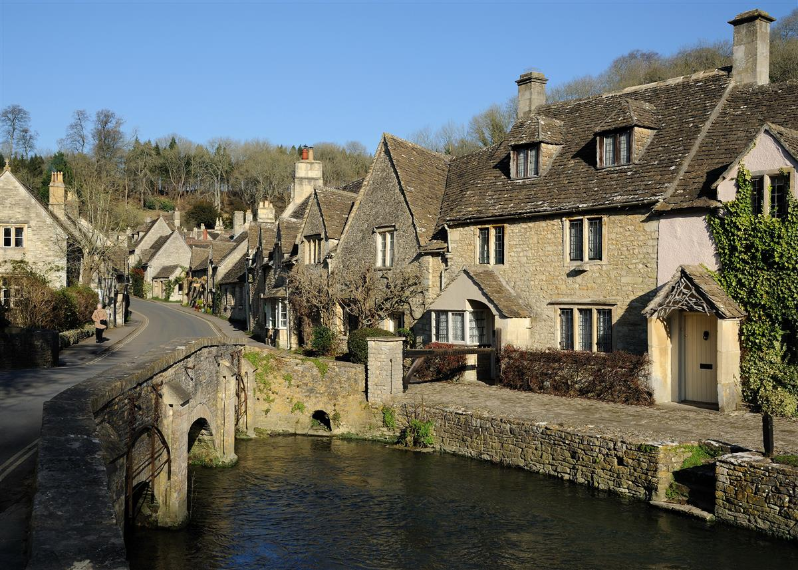
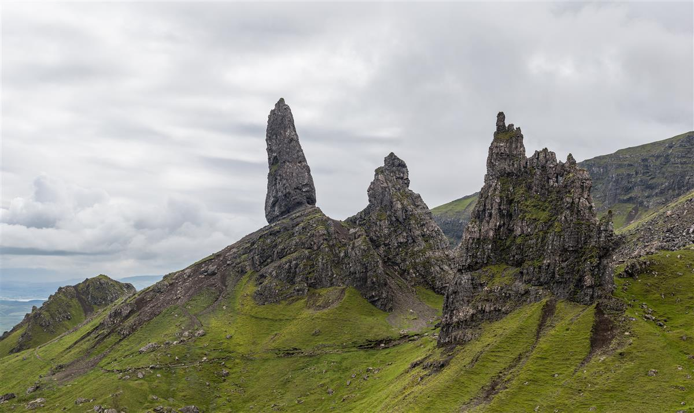

The United Kingdom is a land where history is etched into every stone, and where the echoes of a global past resonate through modern, cosmopolitan cities and timeless, rolling landscapes. It is a nation of four countries, each with its own deep character—from the regal pageantry of London and the academic hallowed halls of Oxford to the wild, mist-shrouded peaks of the Scottish Highlands and the rugged, Celtic coastlines of Wales and Northern Ireland. Traveling through the UK is a journey into the soul of a kingdom that has shaped the modern world, offering a luxury of experiences that range from Michelin-starred urban dining to the quiet, ancient silences of a Neolithic monument. This guide presents 8 essential destinations that define the royal charm and atmospheric beauty of the British Isles.

Dominating the skyline of London from the banks of the River Thames, the Palace of Westminster and its iconic clock tower, commonly known as Big Ben, are the most recognizable symbols of British democracy and royal heritage. The "Elizabeth Tower," as the tower is officially named, houses the Great Bell whose resonant, deep chimes have marked the passing of time for the world since 1859.

Rising from the flat, green expanse of the Salisbury Plain, Stonehenge is arguably the world's most famous prehistoric monument and a site of profound archaeological mystery. Built in several stages starting over 5,000 years ago, this massive circle of standing stones continues to baffle and inspire scientists and spiritual seekers alike.

Perched dramatically atop Castle Rock, an extinct volcano that looms over the Scottish capital, Edinburgh Castle is a fortress that has dominated the skyline for over a thousand years. It is a place of deep royal connection, having served as a royal residence for Scottish monarchs for centuries.

In the heart of the city of Bath, a UNESCO World Heritage site, lies one of the most remarkable archaeological finds in Northern Europe: the Roman Baths. Built around Britain's only natural hot spring nearly 2,000 years ago, the site was the social and spiritual hub of the Roman city of Aquae Sulis.

The Lake District National Park in Northwestern England is a landscape of such staggering natural beauty that it has inspired generations of poets, writers, and artists, most notably William Wordsworth and Beatrix Potter.

Standing on the north bank of the River Thames, the Tower of London is a 900-year-old fortress that has served as a royal palace, a notorious prison, an armory, a zoo, and the home of the Crown Jewels.

Defined by its rolling "wolds" (hills) and its signature honey-colored oolitic limestone, the Cotswolds is an Area of Outstanding Natural Beauty that captures the quintessential image of the English countryside.

Off the west coast of Scotland, connected to the mainland by a soaring bridge, lies the Isle of Skye—a land of such dramatic, jagged beauty that it feels like the edge of the world. It is a place of epic landscapes.
A Kingdom of Stories: The United Kingdom is a destination that reveals itself in layers. From the electric lights of London to the ancient silences of Skye, it is a country that thrives on the contrast between its royal traditions and its wild natural heart. Safe travels and Cheers!
Every destination and accommodation is hand-selected to meet the highest standards of luxury.
Book directly with verified premium providers to ensure the best rates and exclusive perks.
Our worldwide presence ensures you have premium support wherever your journey takes you.
"Luxe Voyages didn't just book a trip; they crafted an unforgettable experience. Every detail was handled with unparalleled professionalism."